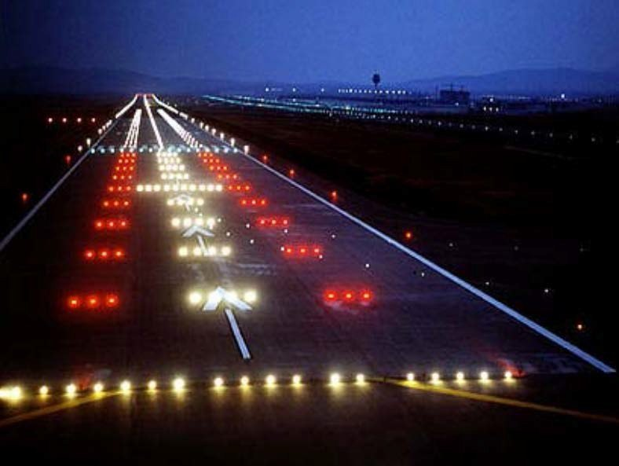
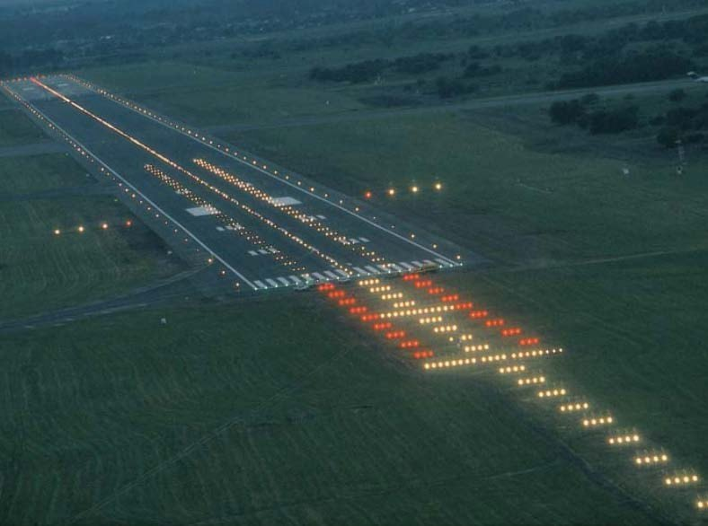

CAT IIIA qualification course for the Boeing 737-800 (DH 50 ft, RVR 175 m): low visibility taxi, take-off RVR 175 m, fail-passive autoland, visual references, aerodrome lighting, company minima, callouts and failures. Includes CAT II.
7 lessons · 2 modules · about 1 hours
Training material only. It does not replace the Aircraft Flight Manual, FCOM, QRH, MEL or the Domestic Airlines Operations Manual, which always take precedence.
Lesson 01: LVO Concept, Categories and Requirements
Lesson 1 of 7 · about 8 min
Learning objectives
Define all weather operations (AWO), LVO and LVP.
State the ICAO approach categories and the company CAT II and CAT IIIA minima.
Explain fail-passive, fail-operational and alert height.
List the four conditions required before any LVO.
Low visibility operations: a level of safety equivalent to normal conditions.
All weather operations
All weather operations (AWO) means operating an aircraft in low visibility conditions. It includes low visibility take-off (LVTO), lower than standard CAT I, other than standard CAT II, standard CAT II and CAT III. The aim is to keep traffic regular in low visibility with a level of safety equivalent to normal operations.
Low visibility operations (LVO) consist of three phases:
low visibility taxi;
low visibility take-off (LVTO);
low visibility approach and landing.
Low visibility procedures (LVP) are the procedures applied at an aerodrome to protect these operations: protection of the runway against incursion and of the accuracy and integrity of the ILS signals. LVP are established for departures with RVR below 550 m, for CAT II and III approaches, and when weather prevents full visual observation of the manoeuvring area.
Relationship between meteorological conditions, aerodrome LVP phases and the pilot's operations (from the B737NG low visibility procedures manual).
Approach categories (ICAO)
Category
Decision height
RVR
I
Not lower than 200 ft
Visibility ≥ 800 m or RVR ≥ 550 m
II
Lower than 200 ft, not lower than 100 ft
RVR ≥ 300 m (ICAO)
IIIA
Lower than 100 ft, or no DH
RVR ≥ 175 m
IIIB
Lower than 50 ft, or no DH
RVR below 175 m, not less than 50 m
IIIC
No DH
No RVR limitation
Recent ICAO and EASA texts group IIIA, IIIB and IIIC as CAT III, but the sub-categories are still used in many operations manuals and charts. When the DH and the RVR fall in different categories, the operation is conducted in the most demanding category. The company definition of CAT II also specifies the RVR at the measuring points: RVR A (threshold / touchdown zone), RVR B (mid-point) and RVR C (roll-out end).
Fail-passive, fail-operational and alert height
Fail-passive system — after a failure, no significant deviation of flight path or attitude, but the landing is not completed automatically: the pilot takes over or goes around.
Fail-operational system — after a single failure below the alert height, the approach, flare and landing can still be completed automatically.
Alert height — the height above which a CAT III approach is discontinued if a failure occurs in a redundant part of a fail-operational system. It applies to fail-operational operations without DH.
B737NG
With both autopilots engaged in APP mode, the 737NG autoland is fail-passive: if one channel fails, both A/Ps disengage with minimal manoeuvring and aural and visual warnings. The 737NG has no automatic roll-out guidance. This is why the B737NG operates CAT IIIA with a decision height (50 ft), not CAT IIIB or no-DH operations.
DH 100 ft, TDZ RVR 300 m, MID RVR 175 m — autoland mandatory
B737-800 — CAT IIIA approach
DH 50 ft, TDZ RVR 175 m, MID RVR 175 m, stop-end RVR 75 m — fail-passive autoland mandatory (both A/Ps)
B737-800 — low visibility take-off
Minimum RVR 175 m — TDZ and MID RVR required
All aircraft (B737-800, Q400, Q200)
CAT I: DH 200 ft, RVR 550 m — take-off RVR 500 m
Pilot flying
The captain (left seat) is PF in all phases of LVO
All company B737-800s are certified for CAT IIIA (fail-passive autoland). CAT II / IIIA operations are flown only by crews trained and qualified for CAT IIIA, only at aerodromes certified for the operation, and never below the minima published for the aerodrome (use the chart value if higher).
Four conditions before any LVO
Operator — authorised by the Authority (DACM) for the operation.
Crew — trained, checked and current for LVO. Both pilots must be qualified.
Aircraft — certified for the operation (CAT II / IIIA fail-passive autoland) with the required equipment serviceable.
Aerodrome — LVP declared in force, with the required ground equipment serviceable.
Company notes
LVO in operation may be announced by ATIS, GND or TWR when RVR is below 800 m; LVTO procedures must be in operation when RVR is below 400 m. When LVO is in operation and the RVR is above CAT I minimums, non-qualified crews are not authorised to conduct low visibility taxi, take-off or approach.
Key takeaways
LVO = LV taxi + LVTO + LV approach; LVP protect the runway and the ILS.
Company B737-800: CAT II (DH 100 ft, RVR 300 m) and CAT IIIA (DH 50 ft, RVR 175 m), autoland mandatory; LVTO 175 m; captain PF.
The 737NG dual-A/P autoland is fail-passive: CAT IIIA with a DH, manual roll-out.
Operator, crew, aircraft and aerodrome must all be qualified.
Knowledge check
Which four elements must all be qualified before any LVO?
Aircraft, fuel, weather, ATC
Operator approval, crew qualification, aircraft certification and aerodrome LVP in force
Captain, first officer, dispatcher and cabin crew
Only the aircraft and the runway
Answer: B. The operator must be authorised, the crew qualified and current, the aircraft certified and serviceable, and the aerodrome must have LVP in force.
Module 1 · LVO Concepts
Lesson 02: Seeing in Low Visibility: Visual References and Human Factors
Lesson 2 of 7 · about 7 min
Learning objectives
Explain why the visual phase is so short in CAT II and CAT IIIA.
In low visibility the visual phase is very short (ICAO presentation).
A short visual phase
In low visibility the instrument phase of the approach becomes longer and the visual phase shorter. At a CAT II DH of 100 ft, the runway is less than 5 seconds away. At a CAT IIIA DH of 50 ft the aircraft is already over the runway threshold area and the autopilot flare is starting: the decision is whether the visual reference is enough to check the automatic landing and to steer the manual roll-out — there is no margin for error.
The average time for a pilot to switch from outside cues to the instruments and back is about 2.5 seconds — during which a jet travels about 150 m.
The fovea of the eye is only about 1.5° wide: the lighting patterns must emphasise the centreline.
Visual workload is manageable when the situation unfolds as expected — but capacity breaks down with ambiguous or transitory cues. Standardisation of lighting and procedures is essential.
Definitions
RVR — the range over which the pilot on the runway centreline can see the runway surface markings or the lights delineating the runway or its centreline.
Slant visual range (SVR) — the distance between the pilot's eye and the farthest light the pilot can see.
Visual segment — the length of approach and runway lighting in view at any one moment.
Cockpit cut-off angle — the angle below which the ground is hidden by the nose: around 11°–15° depending on the aircraft. On the B737NG the ground is hidden for about 12 m ahead of the pilot during taxi.
Variation of the visual segment with height in homogeneous fog: from 200 ft the approach lights are exposed for about 15 seconds; from 100 ft for only about 3 seconds (ICAO presentation).
From 200 ft to the point where the threshold lights disappear under the nose takes about 10–12 seconds; at 100 ft the exposure time is 3–5 seconds. A rough guide for the minimum acceptable visual segment is about 150 m (5 lights) ahead of the aircraft.
Required visual reference at DH (CAT II and CAT IIIA)
Company rule
A CAT II or CAT IIIA approach may not be continued below DH unless a visual reference of at least a 3-light segment of the approach light centreline, the touchdown zone lights, the runway centreline lights or the runway edge lights — or a combination of these — is attained and can be maintained.
Approach and runway lighting seen on approach in different visibility conditions (ICAO presentation, source KLM).
Key takeaways
At CAT II DH the runway is less than 5 seconds away; at CAT IIIA DH (50 ft) the flare is starting.
Visual segment, SVR and cockpit cut-off angle decide what the pilot can see.
Below DH only with at least a 3-light segment, attained and maintained.
Knowledge check
What visual reference is required to continue a CAT II or CAT IIIA approach below DH?
The whole runway
At least a 3-light segment of approach, TDZ, centreline or edge lights, attained and maintained
Any single light
The PAPI only
Answer: B. At least a 3-light segment of the specified lights, attained and maintained.
Module 1 · LVO Concepts
Lesson 03: The Aerodrome: Lighting, Signs and LVP
Lesson 3 of 7 · about 8 min
Learning objectives
Recognise the runway and taxiway lighting used in LVO.
Identify stop bars, CAT II/III holding positions and RETILs.
Explain the ILS critical and sensitive areas.
CAT II / III lighting: red side-row barrettes in the inner 300 m and touchdown zone lights (ICAO presentation).
Approach and runway lighting
CAT I approach and runway lighting (ICAO presentation).
Runway edge lights — white; on ILS runways without centreline lights, the last 600 m (or last third) may be yellow (caution zone). Runway end lights are red.
Runway centreline lights — white; colour-coded alternating red and white from 900 m before the runway end, and all red for the last 300 m.
Touchdown zone lights — required on runways used in low visibility; from the threshold for 900 m or to the mid-point, whichever is less.
CAT II / III runways must have approach lights with red side-row barrettes in the inner 300 m, touchdown zone lights and runway centreline lights. For CAT IIIA with manual roll-out, the centreline lights are the pilot's only directional reference after touchdown.
Taxiway centreline lights — green; blue edge lights on minor taxiways and aprons. Green lead-off lights may guide to an exit; lead-on lights are lit only with a clearance.
Stop bars and holding positions
A lit red stop bar across a taxiway.
Never
Never cross a lighted red stop bar — even if cleared by ATC. Stop and ask.
Runway-holding positions: CAT II/III holding positions (A2) are further from the runway than CAT I / visual ones (A1), to protect the ILS signal.
CAT II/III runway-holding positions are set farther back from the runway than CAT I positions, to keep aircraft out of the ILS critical and sensitive areas.
A surface movement guidance and control system (SMGCS) may switch taxiway centreline sections and stop bars to guide aircraft along their cleared route.
Rapid exit taxiway indicator lights
RETILs: yellow lights in a 3-2-1 pattern, 100 m apart, the single light 100 m before the turn-off.
ILS protection
ILS critical area — around the localiser and glide path antennas; vehicles and aircraft are excluded during ILS operations.
ILS sensitive area — beyond the critical area; movement is controlled to prevent interference.
Obstacle free zone (OFZ) — kept clear of all obstacles above the inner runway strip.
With LVP in force, ATC increases spacing so that a landing aircraft is not disturbed by an aircraft in the sensitive area.
Key takeaways
Centreline lights: red/white from 900 m to go, all red last 300 m.
TDZ lights: required for LVO runways; edge lights may be yellow in the last 600 m.
Never cross a lit red stop bar; CAT II/III holding positions are farther back.
ILS critical and sensitive areas protect the signal — LVP increase spacing.
Knowledge check
ATC clears you to cross a runway, but the stop bar in front of you is still lit red. What do you do?
Cross — the clearance is valid
Stop and ask ATC; never cross a lit red stop bar
Cross slowly
Flash the landing lights and cross
Answer: B. A lit red stop bar must never be crossed, even with a clearance.
Module 2 · LVO Procedures (B737-800)
Lesson 04: Planning and Low Visibility Taxi
Lesson 4 of 7 · about 7 min
Learning objectives
Prepare a flight with low visibility at departure or destination.
Select take-off and destination alternates.
Apply the company low visibility taxi procedures.
Plan the flight and the taxi before you move.
Pre-flight planning
Both pilots qualified and current for LVO.
NOTAMs reviewed — runway lighting, RVR equipment, ILS status.
LVP in force at the aerodrome (ATIS or RTF).
Technical log and MEL — defects that may affect LVO capability (see the required equipment list, Lesson 6).
Weather within company, crew and aerodrome minima.
Fuel — extra fuel for possible delays.
Alternates — take-off and destination alternates within minima.
Alternates
Take-off alternate — required when the weather at departure is below the landing minima, or a return is not possible. For a twin, within one hour at the one-engine-inoperative cruise speed (still air, actual take-off mass). The weather from one hour before to one hour after the ETA must be at or above the applicable minima (at least CAT I for one engine inoperative).
Destination alternate — the weather from one hour before to one hour after the ETA must be at or above the planning minima in the OM A.
Low visibility taxi (company procedure)
Brief the taxi routing, runway crossings, stop bars, hot spots, sensitive areas and special local procedures — using the low visibility taxi chart if available.
Complete checklists, set-ups, briefings and paperwork with the aircraft stopped — before taxi or at the CAT II/III holding point.
Taxi at a maximum of 10 kt. The captain taxis.
Both pilots keep a maximum lookout and stay aware of other traffic; sterile flight deck.
Make sure every ATC clearance is understood and acknowledged; ask in case of doubt.
If unsure of your position: stop immediately and ask ATC — request a follow-me vehicle or progressive taxi.
Remember
There is no minimum visibility for taxi, but the commander remains responsible for clearance from other aircraft, vehicles and obstacles. At many aerodromes ATC cannot see you. From the B737NG flight deck, the ground is hidden for about 12 m ahead.
Key takeaways
Plan: both pilots qualified, NOTAMs, LVP in force, MEL, minima, fuel, alternates.
Take-off alternate within 1 hour OEI when below landing minima at departure.
LV taxi: brief, paperwork stopped, max 10 kt, captain taxis, stop if unsure, never cross a red stop bar.
Knowledge check
What is the maximum taxi speed in low visibility according to the company procedure?
5 kt
10 kt
20 kt
30 kt
Answer: B. Maximum 10 kt.
Module 2 · LVO Procedures (B737-800)
Lesson 05: Low Visibility Take-off (LVTO)
Lesson 5 of 7 · about 6 min
Learning objectives
Apply the company LVTO minima and RVR requirements.
Use pilot assessment correctly.
Prepare the take-off in low visibility.

LVTO: RVR 175 m minimum, captain only.
Company LVTO minima (B737-800)
The company is approved for LVTO with a minimum RVR of 175 m.
TDZ and MID RVR are required.
When not reported, the TDZ RVR may be determined by pilot assessment.
When the TDZ RVR is measured, pilot assessment is possible only when the reported RVR is above 150 m.
LVTO procedures must be in operation when the RVR is below 400 m; any take-off with RVR below 400 m is an LVTO.
General rules (OM A / EASA)
The RVR / visibility conversion table is not used for take-off minima.
The required RVR must be achieved at all relevant reporting points — the lowest relevant value decides.
Take-off minima also depend on the runway lighting (edge and centreline lights) and the RVR equipment — check the aerodrome take-off minima on the chart (e.g. Jeppesen 10-9).
Before take-off
Captain only take-off in LVO.
Check the take-off alternate.
Tune the ILS for localiser reference where available, and verify the aircraft heading matches the runway heading.
Line up on the centreline and set take-off thrust only when aligned — a rolling take-off during alignment is not recommended.
Brief the rejected take-off: directional control on the centreline lights, and the RVR along the runway.
Key takeaways
Company LVTO: RVR 175 m minimum, TDZ and MID RVR required.
Pilot assessment of TDZ RVR when not reported, or when the reported RVR is above 150 m.
Captain only take-off; align before applying thrust; brief the reject.
Knowledge check
What is the company minimum RVR for a low visibility take-off on the B737-800?
125 m
175 m
300 m
400 m
Answer: B. The company LVTO minimum is RVR 175 m with TDZ and MID RVR required.
Module 2 · LVO Procedures (B737-800)
Lesson 06: CAT IIIA Approach and Autoland (and CAT II)
Lesson 6 of 7 · about 12 min
Learning objectives
Check the landing requirements and required airborne equipment.
Set up and brief the CAT II and CAT IIIA approach.
Fly the fail-passive autoland and the manual roll-out with the company callouts.

CAT II: DH 100 ft, RVR 300 m — CAT IIIA: DH 50 ft, RVR 175 m.
Landing requirements (company)
Item
CAT I
CAT II
CAT IIIA
Autopilot
1 A/P
Autoland (both A/Ps)
Fail-passive autoland (both A/Ps)
Minimum DH (use Jeppesen if higher)
200 ft
100 ft
50 ft
TDZ RVR (use Jeppesen if higher)
550 m
300 m
175 m
MID RVR
—
175 m
175 m
Stop-end (roll-out) RVR
—
Required if reported (may be replaced by MID RVR if not reported)
75 m
Ground equipment
See the table of failed or downgraded ground equipment (OM A)
Braking action
Medium or better (µ > 0.3)
Runway length
Landing distance + 15 % (advisory data, braking good or medium)
Weather
No heavy precipitation; maximum headwind 25 kt, crosswind 20 kt, tailwind 10 kt; no gusts or windshear
Aircraft
Both engines operative; flaps 40 (30 non-standard); glideslope angle 2.5°–3.25°
The TDZ RVR is always controlling. The MID and stop-end RVR are also controlling if reported and relevant (the part of the runway used in the high-speed phase of the landing, down to about 60 kt). Values from the company operations specifications; apply the aerodrome chart minima if higher.
Required airborne equipment (CAT II and CAT IIIA)
The B737NG requirements are the same for CAT II and CAT IIIA: all engines; flaps 30 or 40 (flaps 40 recommended); hydraulic systems A and B; auto speedbrakes; antiskid; both EFIS control panels; two generators on the buses; both A/Ps engaged in APP mode, with disengage switches, lights and aural warning; FD bars on both PFDs; both TO/GA switches; two ADIRUs in NAV mode; both ILS receivers with valid indications and one means to check glideslope validity (OM, DME or equivalent); both DEUs (no source transfer); standby horizon; displays, altitude and FMA on both PFDs; radio altimeter and DH on both PFDs; windshield wipers in precipitation. If any item is missing, check the full table and the MEL — the capability may be downgraded.
Set-up
BARO minimums: for CAT II and CAT IIIA, set threshold elevation + 500 ft (for CAT I, set the DA).
RADIO minimums: set the DH — 100 ft for CAT II, 50 ft for CAT IIIA (or the chart value if higher) — and keep the selector on RADIO.
Captain only PF; the F/O monitors the instruments until the aircraft reaches taxi speed. Brief the taxi-in route in detail; the taxi chart stays in view for both pilots.
Brief crew and aircraft status, weather, NOTAMs, fuel for destination and alternate, the approach, the go-around and the failure responses.
Approach ban: do not continue beyond the outer marker or equivalent (or 1,000 ft above the aerodrome) unless the reported controlling RVR is at or above the minima.
B737NG autoland sequence
Both VHF NAV receivers tuned to the ILS; APP mode armed; the second A/P engaged in CMD — it must be engaged by 800 ft RA.
Below 1,500 ft RA after LOC and G/S capture: the second A/P couples, the ILS deviation monitor is tested, FLARE armed is annunciated and A/P go-around arms.
At 400 ft RA the stabiliser is trimmed further nose-up — if the A/Ps then disengage, forward control column force may be needed. If FLARE is not armed by about 350 ft RA, both A/Ps disengage; no FLARE armed at 500 ft: go around.
About 50 ft RA: FLARE engaged; at about 27 ft: RETARD; the A/T disengages about 2 seconds after touchdown; the A/P is disengaged manually after touchdown and the roll-out is flown manually.
CAT IIIA — the last 50 ft
At a 50 ft DH, “MINIMUMS” and “FLARE” come almost together. Decide at once: with at least a 3-light segment, continue — the autopilot lands, you monitor the flare and the RETARD. After touchdown there is no automatic roll-out: disconnect the A/P and keep the centreline lights between your feet with the rudder until taxi speed. Without the visual reference: go around.
Company procedure and callouts
Phase
PF (captain)
PM
Cleared for approach
ILS NAV 1, APP mode
“CHECKED”
LOC alive / captured
“CHECKED”; ILS NAV 2, A/P B in CMD
“LOC ALIVE”; “CHECKED”
GS alive
“CHECKED”
“GS ALIVE”
OM or FAF
“CHECKED”
“OM / FIX … FT”
500 ft above threshold
“CHECKED”
“STABLE, 500, FLARE ARMED” — then FMA callouts
100 ft above minimum
“CHECKED”
“APPROACHING MINIMUM” (if no automatic callout)
Minimum (100 ft CAT II / 50 ft CAT IIIA)
“CONTINUE” or “GO-AROUND”
“MINIMUMS”
50 ft
Disconnect A/P if no FLARE green, and land manually
“FLARE” or “NO FLARE”
27 ft
“RETARD”
Touchdown
Disconnect A/P; extend speedbrakes manually if not up; maximum reverse
“SPEEDBRAKES UP” or “NOT UP”; “REVERSERS NORMAL” or “NO REVERSE ENG 1/2”
Roll-out
Manual braking; disarm autobrakes
Monitor deceleration; “AUTOBRAKES DISARM”
Deviation callouts (PM)
“SPEED” (IAS +10 / −5 kt) · “SINK RATE” (more than 1,000 ft/min) · “PITCH” (excessive pitch change) · “BANK” (more than 7°) · “LOCALIZER” (more than ¼ dot) · “GLIDESLOPE” (more than ½ dot). FMA callouts are mandatory during LVO.
Loss of visual reference
Before touchdown: if the required visual reference is lost below DH, go around immediately — even if the aircraft touches down during the go-around, continue it.
After touchdown: if the visual reference is lost, do not attempt a go-around.
Key takeaways
CAT II: DH 100 ft, TDZ RVR 300 m, MID 175 m. CAT IIIA: DH 50 ft, TDZ and MID RVR 175 m, stop-end 75 m.
Autoland mandatory; braking medium or better; winds 25/20/10; both engines; flaps 40.
BARO = threshold + 500 ft; RADIO = DH (100 ft CAT II, 50 ft CAT IIIA).
No automatic roll-out on the 737NG: steer on the centreline lights after touchdown.
Second A/P by 800 ft RA; FLARE armed by 500 ft or go around; FLARE 50 ft, RETARD 27 ft; disconnect A/P after touchdown.
FMA callouts mandatory; go around if reference is lost before touchdown, never after.
Knowledge check
During a CAT II or CAT IIIA autoland, FLARE is not armed at 500 ft. What do you do?
Continue and land manually
Go around
Engage the second A/P
Continue to DH and decide
Answer: B. No FLARE armed at 500 ft: go around (there is no automatic go-around capability without FLARE armed).
Module 2 · LVO Procedures (B737-800)
Lesson 07: Failures, Contingencies and Go-around
Lesson 7 of 7 · about 8 min
Learning objectives
Respond to AFDS failures above and below 800 ft RA.
Handle engine failure, fire and incapacitation on a CAT II / IIIA approach.
Fly the CAT II / IIIA go-around.
Know the failure responses before the approach.
General rule
In case of failure of any system, instrument or AFDS element affecting CAT II or CAT IIIA, apply the QRH. All non-normal checklists must be completed by 1,000 ft above the aerodrome; otherwise go around and reassess the capability with the required equipment table.
AFDS failures (company)
Failure
Above 800 ft RA
At or below 800 ft RA
During go-around
Flashing red A/P disengage light and horn
Re-engage A/P
Execute manual go-around (a)
Execute manual go-around
Steady red A/P disengage light (stabiliser out of trim)
Not applicable
Disengage A/P and execute manual go-around (a)
Not applicable
Flashing red A/T disengage light
Continue with manual thrust
No FLARE armed annunciation
Engage second A/P
Disengage A/P and execute manual go-around (a)
Not applicable
Warning / caution lights
Apply the QRH — NNCs completed by 1,000 ft AAL
Apply the QRH
ILS deviation alert
Go-around (a)
Not applicable
(a) If suitable visual reference is established, perform a manual landing.
Because the 737NG autoland is fail-passive, a single A/P channel failure below 800 ft RA disengages both autopilots. In CAT IIIA conditions a manual landing is only possible if the required visual reference is already established — otherwise go around.
Engine failure, fire, incapacitation (company)
Engine failure during a CAT II / IIIA approach: disconnect A/P and A/T and execute a manual go-around, or a manual landing if suitable visual reference is established.
Engine or APU fire during the final CAT II / IIIA approach with no visual reference at minimums: autoland may be performed and the NNC done on the ground.
Pilot incapacitation during a CAT II / IIIA approach with no visual reference at minimums: autoland may be performed; tell ATC to get medical assistance on landing, and advise if unable to vacate the runway.
Failed ground equipment
Use the OM A table of failed or downgraded equipment before and during the flight. After passing 1,000 ft above the aerodrome, the commander may continue at his discretion if a ground failure is announced late.
For CAT II and CAT IIIA, a combination of runway light deficiencies and RVR equipment deficiencies is not permitted. Failures other than ILS affect the RVR, not the DH.
Go-around (B737NG)
PF pushes TO/GA: “GO-AROUND, CHECK GA THRUST” — A/T advances to reduced go-around thrust (1,000–2,000 ft/min climb); pitch TO/GA, about 15° nose-up initially; second push for full go-around thrust if needed.
Above 400 ft RA, select the roll mode; below 400 ft the AFDS stays in go-around mode unless both A/Ps and FDs are disengaged.
At acceleration height, retract flaps on schedule; then LVL CHG or VNAV, climb thrust, after take-off checklist.
Note: the pitch mode cannot change from TO/GA until enough nose-down trim has been added for single A/P operation; if the stabiliser trim is not satisfactory, ALT ACQ is inhibited and the A/P disengage lights show steady red.
Key takeaways
All NNCs by 1,000 ft AAL — otherwise go around.
Below 800 ft RA, most A/P failures mean a manual go-around (or manual landing with visual reference).
Engine failure: manual go-around; fire or incapacitation with no visual reference at minimums: autoland may be performed.
Go-around: TO/GA, flaps 15, gear up; roll mode only above 400 ft RA.
Knowledge check
At 600 ft RA on a CAT IIIA approach, the A/P disengage light flashes red with the horn. What is the company response?
Re-engage the A/P
Execute a manual go-around (or land manually only with suitable visual reference)
Continue to DH
Disconnect the A/T only
Answer: B. At or below 800 ft RA: execute a manual go-around, unless suitable visual reference allows a manual landing.
Training material only. It does not replace the Aircraft Flight Manual, FCOM, QRH, MEL or the Domestic Airlines Operations Manual, which always take precedence.